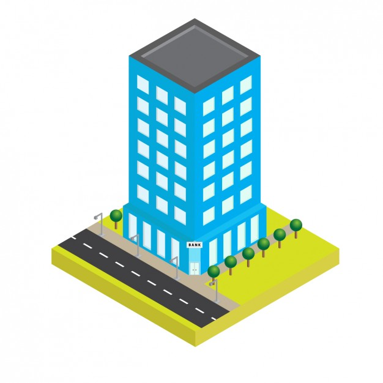

<ion-header>
    <ion-toolbar color="primary">
        <ion-title>
            Finca2Admin
        </ion-title>
    </ion-toolbar>
</ion-header>

<ion-content>

    <ion-list>
        <ion-list>
            <ion-item-sliding *ngFor="let comunidad of comunidades">
                <ion-item lines="inset" button [routerLink]="['/comunidad-details', comunidad.id]">
                    <ion-avatar slot="start">
                        
                    </ion-avatar>
                    <ion-label>
                        <h2> <b> {{comunidad.nombre}} </b> </h2>
                        <p> {{ comunidad.direccion}}</p>
                    </ion-label>

                </ion-item>
                <ion-item-options side="end">
                    <ion-item-option [routerLink]="['/todo-list', comunidad.id]" color="success">
                        <ion-icon name="list"></ion-icon>
                    </ion-item-option>
                </ion-item-options>


            </ion-item-sliding>
        </ion-list>
    </ion-list>


    <ion-fab vertical="bottom" horizontal="end" slot="fixed">
        <ion-fab-button routerLink="/comunidad-details" routerDirection="forward">
            <ion-icon name="add"></ion-icon>
        </ion-fab-button>
    </ion-fab>
</ion-content>